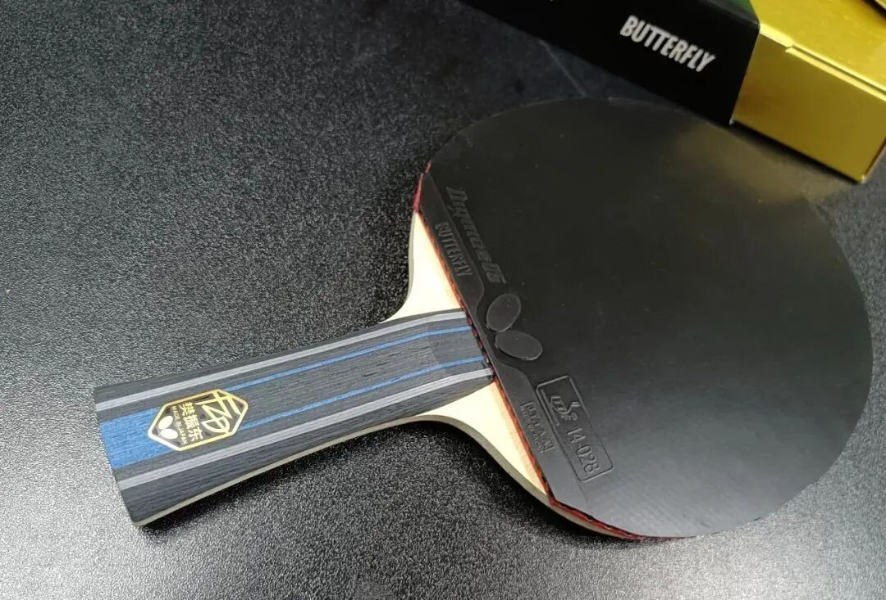

Why Play Tenergy Before Dignics?
Many Butterfly stars eventually land on Dignics—yet most of them still pass through Tenergy first. That is not wasted time. For a lot of players, Tenergy is the stage where the stroke learns to punch through before a harder D-series sheet pays off.
Recent switches that rhyme
Recent examples:
| Player | Blade (reported) | Path |
|---|---|---|
| Tojo Hayato | Fan Zhendong ALC special | FH T05 Hard → D05; now both sides D05 |
| Polcanova (new Euros WS champion) | Innerforce Layer ZLC | BH T64 → D05; now both D05 |
Shared pattern: Tenergy → Dignics.
Among Butterfly-contracted men, Tenergy users are already rare. Among women, roughly half still linger on T—often because:
- Tenergy’s catapult is friendlier
- Aside from T05 Hard, many T sheets feel less force-demanding
- Dignics usually grips better at small force, but is harder to drive through
On an inner blade, plenty of amateurs can fully open T05 on FH but find D05 a struggle. If you cannot punch through, you never get full acceleration. Top male pros usually do not have that ceiling problem.

If D is the destination, why stop at T?
Because history shows a staged migration, not a teleport.
Harimoto Tomokazu (compressed timeline)
| Period | Blade | Rubbers |
|---|---|---|
| 2018 | Innerforce ALC special (ZJK-ALC style grip art) | FH T05 / BH T05 FX |
| 2019 | Harimoto ALC | both T05 |
| 2020–2021 | Harimoto ALC | FH D05 / BH T05 (BH still could not open D05) |
| 2022–2023 | Harimoto ALC | both D05 |
| Now | Harimoto SALC | both D05 |
Tojo Hayato
| Period | Blade | Rubbers |
|---|---|---|
| 2020 | Zhang Jike ZLC | both T05 |
| 2022 | Zhang Jike ALC | T05 Hard + T05 |
| 2023 | Fan Zhendong ALC | T05 Hard + D05 |
| 2024 | Fan Zhendong ALC | both D05 |
Even when players already suspect double D is the end state, they often cannot open D yet—so they must earn that stroke window first.
A personal parallel: years ago T80 on BH felt tough and slow; years later it felt lightning fast; later still it felt almost too transparent on BH. Gear “difficulty” moves with your punch-through ability.
Practical takeaway
!!! tip "No one-step top-tier kit" Do not demand peak D-series performance before your impact share and timing can open that sponge. Walk the stairs: usable T → mix → full D when the stroke is ready.
Also worth watching in the same period: Tibhar’s Japan push—Hao Shuai on MK Carbon + K3 PRO, Wu Junseong moving from outer ALC special + D09c toward outer ALC special + K3 PRO after joining Tibhar. Brands follow “effective” ambassadors; gear paths still follow what the player can actually open.
Related: Boosting Truth
Note
Translated from Chinese—please suggest fixes if wording looks off.